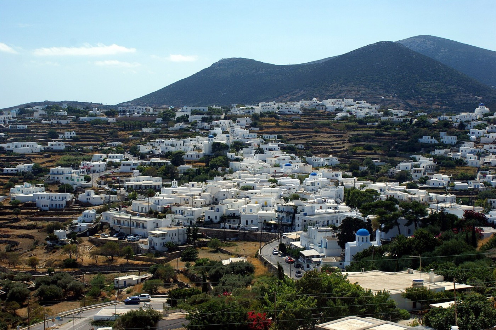

Sifnos
Cuisine
La cuisine de Sifnos : des plats cuits lentement au four dans des pots en terre, un fromage affiné dans le vin, du miel de thym et des douceurs aux amandes.

Photo : Kondephy, CC BY-SA 4.0, via Wikimedia Commons

Produits et plats
- Revithada
- Des pois chiches à l’oignon, au laurier et à l’huile d’olive, enfournés le samedi au four à bois dans un pot en terre à couvercle, la skepastaria, et cuits toute la nuit pour le déjeuner du dimanche.
- Mastelo
- De l’agneau ou du chevreau au vin rouge et à l’aneth, cuit lentement dans le pot en terre qui lui donne son nom ; un plat de Pâques.
- Revithokeftedes et kaparosalata
- Des beignets de pois chiches, et une purée de câpres séchées mixées avec de l’oignon et des herbes. Les deux sont servis dans beaucoup de tavernes.
- Manoura
- Un fromage de lait de chèvre et de brebis, affiné dans la lie de vin rouge, qui colore sa croûte ; il devient plus piquant en vieillissant. Le xinomyzithra est un fromage frais et acidulé.
- Miel et douceurs
- Le miel de thym, récolté en août ; le pasteli, des barres de sésame au miel ; la melopita, la tarte au miel et au fromage de Pâques ; et les amygdalota, des douceurs aux amandes façonnées à la main, parfumées à l’eau de rose.
- Câpres
- Les câpriers poussent à l’état sauvage dans les murs de pierre. Les boutons et les feuilles se vendent salés, en bocaux, à rapporter chez soi.
Nikolaos Tselementes, né à Exambela en 1878, a publié son livre de cuisine au début des années 1930 ; en grec, son nom est devenu synonyme de livre de cuisine. L’Association culturelle de Sifnos organise en son honneur un festival gastronomique, en général en septembre.
Où nous mangeons
Voici des adresses que nous aimons ; les choses changent, demandez-nous avant d’y aller.
Platys Gialos
-
Platys Gialos
Une taverne familiale sur la plage.
-
Omega 3
Platys Gialos
Un petit bar à vin et à poisson sur la plage, avec de petites assiettes modernes.
Kamares
-
Simos
Kamares
Une taverne familiale de longue date, connue pour sa revithada et ses plats au four.
-
Kamares
Une taverne familiale, cuisine maison.
Seralia, au pied de Kastro
-
Captain George
Seralia
Une taverne de poissons près de l’ancien port.
Artemonas
-
Margarita
Artemonas
Un ouzeri familial sur la place principale.
-
Mosaico
Artemonas
Des mezzés dans une cour.
Kato Petali
-
Kelari
Kato Petali
Une taverne familiale dans un ancien pressoir à huile, connue pour son mastelo et sa revithada.
Apollonia
Boulangeries et pâtisseries
-
Theodorou
Artemonas
Une confiserie familiale, à sa troisième génération : halvadopita, pasteli, amygdalota.
-
Grigoris
Artemonas
Boulangerie-pâtisserie : amygdalota, koulouria et pain.
-
Venios
Artemonas
Une boulangerie de la famille Venios, boulangers sur l’île depuis des générations : tourtes et douceurs traditionnelles.
-
Yellow Bicycle
Artemonas
Pâtisseries et café.
Petit-déjeuner
Bars et cafés
-
Argo
Apollonia
Un bar à musique et à cocktails de longue date, dans la rue principale.
-
Botzi 93
Apollonia
Un bar-restaurant avec terrasse sur le toit, du café du matin jusque tard dans la nuit.
-
Apollonia, dans le Steno
Un bar à cocktails et à musique.
-
Kavos Sunrise
Kastro
Un petit bar à rhum avec vue sur la mer, à côté de Loggia.

Photo : Catlemur, CC BY-SA 4.0, via Wikimedia Commons